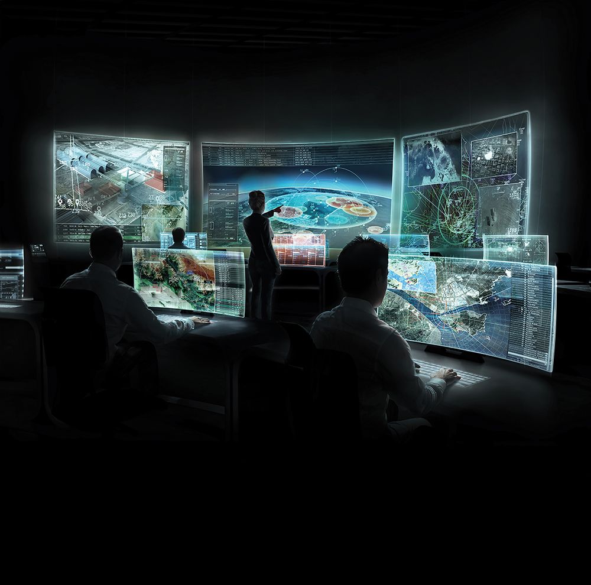

C4ISTAR
C4ISTAR: Command, Control, Communication, Computers, Intelligence, Surveillance, Target Acquisition and Reconnaissance.
Trata-se da coleta, processamento, priorização e apresentação de todos os dados necessários para facilitar o gerenciamento da batalha.
Os sistemas C4ISTAR são vitais para fornecer aos comandantes todas as informações necessárias, bem como a capacidade de processamento para justificar e reforçar seu processo de tomada de decisão.
As coletas de informações vão desde relatórios de inteligência enviados por agentes, analistas, até informações brutas de satélites e diferentes unidades terrestres, marítimas ou aéreas. A riqueza de informações e uma perspectiva tão grande em situações militares pode revelar-se vital para o sucesso do gerenciamento de batalha, e por isso é de extrema importância para as operações militares.
Para garantir que as operações militares possam ser conduzidas com sucesso, os sistemas existentes e futuros devem poder trocar informações com eficiência. A integração exige um pensamento inovador, pois apresenta muitos riscos e problemas. Para garantir a interoperabilidade desejada do sistema.
Os sistemas C4ISTAR geralmente garantem sistemas seguros de comunicação de dados para serem usados em redes públicas. Esta é uma alternativa mais favorável ao orçamento, quando comparada com os custos inerentes ao desenvolvimento e configuração de sistemas C4I - Comando, Controle, Comunicações, Computadores e Inteligência (Militar). Esses sistemas exibem os dados seguros transmitidos aos operadores usando técnicas de última geração, incluindo animação de gráficos e diagramas de sinóticos.
